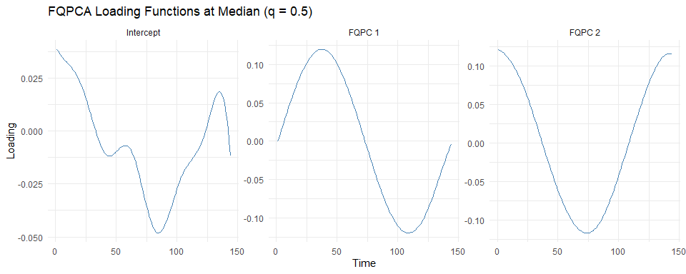

FunQ is an R package providing methodologies for functional data analysis from a quantile perspective. It implements robust Functional Quantile Principal Component Analysis (FQPCA) and Multilevel FQPCA (MFQPCA).
Unlike mean-based Functional PCA, FunQ allows you to model functional curves at specific quantile levels (e.g. median or extreme quantiles). This is particularly useful when functional curves exhibit skewness, subject-specific heteroscedasticity, or outliers.
Documentation Website
A complete, interactive documentation website is available at: 👉 https://alvaromc317.github.io/FunQ/
The website features:
- Getting Started with FQPCA: A comprehensive guide on single-level functional quantile decomposition, parameter selection, and plotting.
- Multilevel Analysis with MFQPCA: A detailed tutorial on handling repeated-measures or hierarchical functional data.
- Function Reference Index: Detailed descriptions and arguments for all exported functions.
Installation
You can install the development version of FunQ from GitHub:
# install.packages("devtools")
devtools::install_github("alvaromc317/FunQ")Quick Start Example: FQPCA
Here is a quick demonstration of applying fqpca at the median () with synthetic functional data.
First, load the libraries:
1. Generating Data
We generate a synthetic dataset of 150 curves with 144 time points and 20% missing observations:
set.seed(5)
n.obs <- 150
n.time <- 144
Y.axis <- seq(0, 2*pi, length.out = n.time)
# Principal component loadings
pc1 <- sin(Y.axis)
pc2 <- cos(Y.axis)
# Subject-specific scores
c1.vals <- rnorm(n.obs, mean=0, sd=1)
c2.vals <- rnorm(n.obs, mean=0, sd=0.8)
# Construct curves and add noise + missing values
Y <- c1.vals %*% t(pc1) + c2.vals %*% t(pc2) + matrix(rnorm(n.obs * n.time, mean=0, sd=0.4), nrow = n.obs)
Y[sample(n.obs * n.time, as.integer(0.2 * n.obs * n.time))] <- NA2. Fit the Model
Fit the Functional Quantile PCA model:
results <- fqpca(
data = Y,
npc = 2,
quantile.value = 0.5,
periodic = FALSE,
splines.df = 10,
seed = 5
)3. Plot Loading Functions
Use the package’s generic plot method to visualize the estimated loading functions:
plot(results, pve = 0.95) +
theme_minimal() +
ggtitle("FQPCA Loading Functions at Median (q = 0.5)")
4. Cross-Validation
Use fqpca_cv_df to optimize the degrees of freedom parameter:
df_grid <- c(5, 10, 15)
cv_result <- fqpca_cv_df(
data = Y,
splines.df.grid = df_grid,
n.folds = 3,
criteria = "points",
periodic = FALSE,
seed = 5,
verbose.cv = FALSE
)
# Mean error per grid value across folds
rowMeans(cv_result$error.matrix)
#> [1] 0.1662699 0.1640000 0.1639919Citation
If you use FunQ in your research, please cite the corresponding methodology papers:
- Álvaro Méndez-Civieta, Ying Wei, Keith M Diaz, Jeff Goldsmith. (2025). Functional quantile principal component analysis. Biostatistics, 26(1), kxae040. DOI: 10.1093/biostatistics/kxae040
- Álvaro Méndez-Civieta, Ying Wei, Jeff Goldsmith. (2026). Multilevel functional quantile principal component analysis. Biostatistics, kxag017. DOI: 10.1093/biostatistics/kxag017